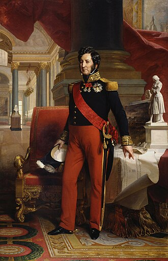
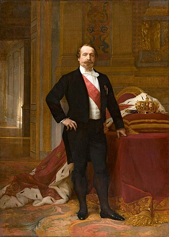
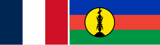
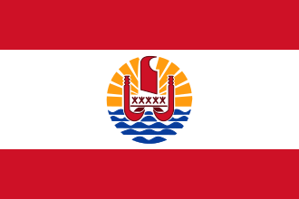

Luigi Filippo I
Napoleone III Terza Repubblica (1870-1940)
Stato Francese (1940-1944)
Quarta Repubblica (1944-1958)
Terza Repubblica (1870-1940)
Stato Francese (1940-1944)
Quarta Repubblica (1944-1958)
 Quinta Repubblica (1958-oggi)
Guadalupa
Riunione
Quinta Repubblica (1958-oggi)
Guadalupa
Riunione

Nuova Caledonia
Polinesia Francese
Territori francesi del Pacifico